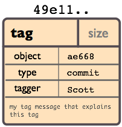
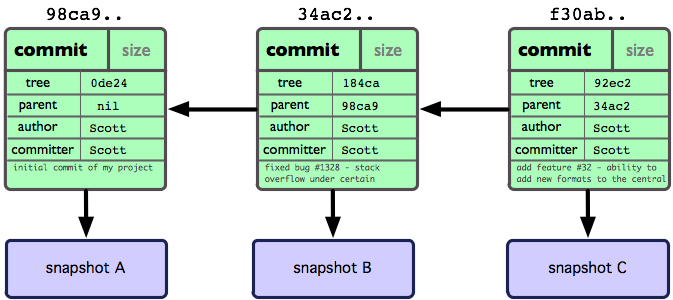
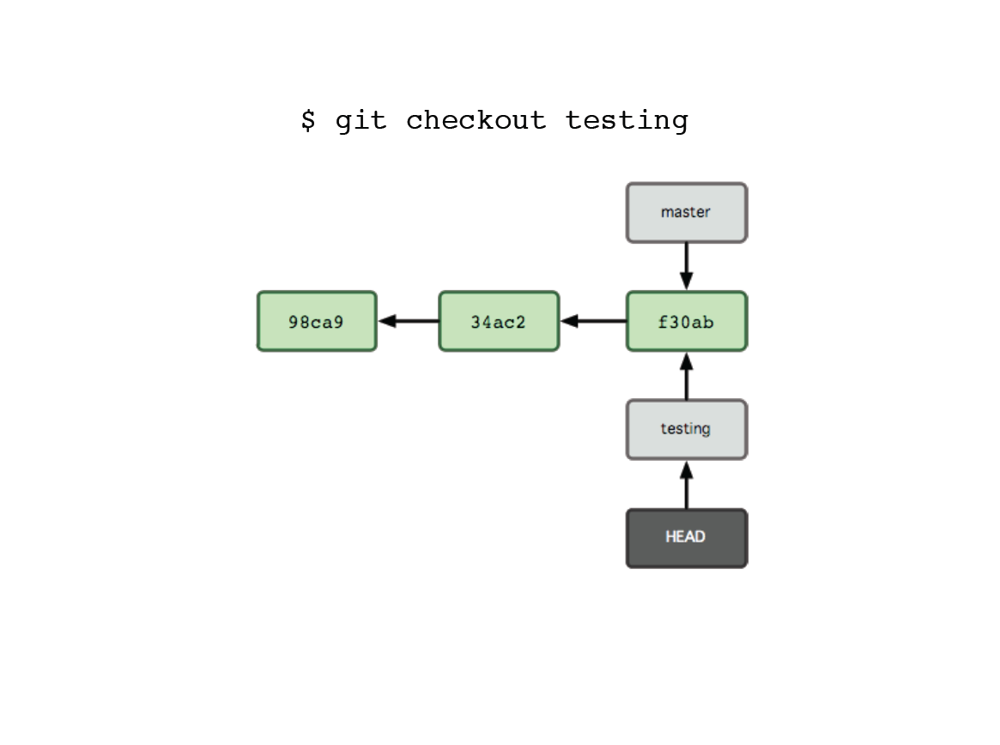
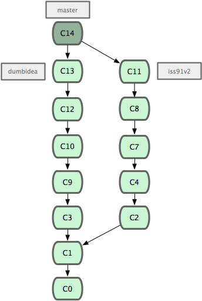

Showoff Menu
Close
Press ? for help.
All features are anonymous.
Press ? for help.
All features are anonymous.
"I'm an egotistical bastard, and I name all my projects after myself. First Linux, now git."
Linus Torvalds (creator of the Linux operating system)
not subversion!
$ git config --global user.name "Jason Meridth"
$ git config --global user.email "jmeridth@gmail.com"
$ git config --global color.ui true
$ git config --global push.default tracking
$ touch hello_world.rb
$ git init
$ git clone
$ git clone git://github.com/jmeridth/console_app.git
$ git clone git://github.com/jmeridth/console_app.git superjason
$ git clone git://github.com/jmeridth/console_app.git
Initialized empty Git repository in /Users/jasonmeridth/console_app/.git/
remote: Counting objects: 79, done.
remote: Compressing objects: 100% (74/74), done.
remote: Total 79 (delta 23), reused 0 (delta 0)
Receiving objects: 100% (79/79), 472.82 KiB | 235 KiB/s, done.
Resolving deltas: 100% (23/23), done.
$ cd console_app
$ ls
total 16
Readme console_app console_app.library console_app.sln\
console_app.tests lib something_new.txt
@@@ruby
#! /usr/bin/env ruby
puts 'hello world'
#! /usr/bin/env ruby
# this program prints out 'hello world'
puts 'hello world'
$ git status # On branch master # Changed but not updated: # (use "git add..." to update what will be committed) # # modified: main.rb # no changes added to commit (use "git add" and/or "git commit -a")
$ git status # On branch master # Changed but not STAGED: # (use "git add..." to update what will be committed) # # modified: main.rb # no changes added to commit (use "git add" and/or "git commit -a")

$ git add main.rb $ git status # On branch master # Changes to be committed: # (use "git reset HEAD..." to unstage) # # modified: main.rb #
$ git add main.rb $ git status # On branch master # Changes THAT ARE STAGED: # (use "git reset HEAD..." to unstage) # # modified: main.rb #
$ vim app.yaml
application: meridth
version: 1
runtime: ruby
api_version: 1
handlers:
- url: .*
script: main.rb
~
~
~
"app.yaml" 8L, 101C
application: meridth
version:
runtime: ruby
api_version: 1
handlers:
- url: .*
script: main.rb
~
~
~
"app.yaml" 8L, 101C
application: meridth
version: 2
runtime: ruby
api_version: 1
handlers:
- url: .*
script: main.rb
~
~
~
"app.yaml" 8L, 101C
$ git status # On branch master # Changes to be committed: # (use "git reset HEAD..." to unstage) # # modified: main.rb # # Changed but not updated: # (use "git add ..." to update what will be committed) # # modified: app.yaml #
$ vim main.rb
#! /usr/bin/env ruby
# this program prints out 'hello world'
puts 'hello world'#! /usr/bin/env ruby
# this program prints out 'Hola Mundo'
puts 'Hola Mundo'$ git status # On branch master # Changes to be committed: # (use "git reset HEAD..." to unstage) # # modified: main.rb # # Changed but not updated: # (use "git add ..." to update what will be committed) # # modified: app.yaml # modified: main.rb #
$ git status # On branch master # Changes THAT ARE STAGED: # (use "git reset HEAD..." to unstage) # # modified: main.rb # # Changed but not updated: # (use "git add ..." to update what will be committed) # # modified: app.yaml # modified: main.rb #
$ git status # On branch master # Changes to be committed: # (use "git reset HEAD..." to unstage) # # modified: main.rb # # Changed THAT ARE UNSTAGED: # (use "git add ..." to update what will be committed) # # modified: app.yaml # modified: main.rb #
$ git status # On branch master # Changes to be committed: # (use "git reset HEAD..." to unstage) # # modified: main.rb # # Changed but not updated: # (use "git add ..." to update what will be committed) # # modified: app.yaml # modified: main.rb #
$ git add app.yaml main.rb $ git status # On branch master # Changes to be committed: # (use "git reset HEAD..." to unstage) # # modified: app.yaml # modified: main.rb #
$ git commit
# Please enter the commit message for your changes. Lines starting
# with '#' will be ignored, and an empty message aborts the commit.
# On branch master
# Changes to be committed:
# (use "git reset HEAD <file>..." to unstage)
# # modified: app.yaml
# modified: main.rb
# ~
~
~
~
".git/COMMIT_EDITMSG" 10L, 279C
$ git commit
descripitive commit message
# Please enter the commit message for your changes. Lines starting
# with '#' will be ignored, and an empty message aborts the commit.
# On branch master
# Changes to be committed:
# (use "git reset HEAD <file>..." to unstage)
# # modified: app.yaml
# modified: main.rb
# ~
~
~
~
".git/COMMIT_EDITMSG" 10L, 279C
$ git commit
Created commit 77d3001: descriptive commit message
2 files changed, 4 insertions(+), 2 deletions(-)

$ git branch
* develop
master
story95
$ git show-branch
* [develop] new file_size function
! [master] added cat-file
! [story05] show-commit-tree added
---
+ [story95] show-commit-tree added
+ [story95^] added revparse
* [develop] new file_size function
* [develop^] modified show to raw
*++ [master] added cat-file
$ git log
commit da39a3ee5e6b4b0d3255bfef95601890afd80709
Author: Jason Meridth <jmeridth@gmail.com>
Date: Sun Apr 13 10:49:15 2008 -0700
update README formatting and added blame
commit 11f6ad8ec52a2984abaafd7c3b516503785c2072
Author: Jason Meridth <jmeridth@gmail.com>
Date: Sun Apr 13 10:45:15 2008 -0700
changed my name a bit
commit dd7b7b74ea160e049dd128478e074ce47254bde8
Author: Jason Meridth <jmeridth@gmail.com>
Date: Sun Apr 13 10:34:15 2008 -0700
added ls-files
commit b60d121b438a380c343d5ec3c2037564b82ffef3
Author: Jason Meridth <jmeridth@gmail.com>
Date: Sun Apr 13 12:13:15 2008 -0700
made the ls-tree function recursive and list trees
$ git log
commit da39a3ee5e6b4b0d3255bfef95601890afd80709 \
Author: Jason Meridth <jmeridth@gmail.com> \ COMMIT
Date: Sun Apr 13 10:49:15 2008 -0700 /
update README formatting and added blame /
commit 11f6ad8ec52a2984abaafd7c3b516503785c2072
Author: Jason Meridth <jmeridth@gmail.com>
Date: Sun Apr 13 10:45:15 2008 -0700
changed my name a bit
commit dd7b7b74ea160e049dd128478e074ce47254bde8
Author: Jason Meridth <jmeridth@gmail.com>
Date: Sun Apr 13 10:34:15 2008 -0700
added ls-files
commit b60d121b438a380c343d5ec3c2037564b82ffef3
Author: Jason Meridth <jmeridth@gmail.com>
Date: Sun Apr 13 12:13:15 2008 -0700
made the ls-tree function recursive and list trees
$ git log
commit da39a3ee5e6b4b0d3255bfef95601890afd80709
Author: Jason Meridth <jmeridth@gmail.com>
Date: Sun Apr 13 10:49:15 2008 -0700
update README formatting and added blame
commit 11f6ad8ec52a2984abaafd7c3b516503785c2072 \
Author: Jason Meridth <jmeridth@gmail.com> \ COMMIT
Date: Sun Apr 13 10:45:15 2008 -0700 /
changed my name a bit /
commit dd7b7b74ea160e049dd128478e074ce47254bde8
Author: Jason Meridth <jmeridth@gmail.com>
Date: Sun Apr 13 10:34:15 2008 -0700
added ls-files
commit b60d121b438a380c343d5ec3c2037564b82ffef3
Author: Jason Meridth <jmeridth@gmail.com>
Date: Sun Apr 13 12:13:15 2008 -0700
made the ls-tree function recursive and list trees
$ git log
commit da39a3ee5e6b4b0d3255bfef95601890afd80709
Author: Jason Meridth <jmeridth@gmail.com>
Date: Sun Apr 13 10:49:15 2008 -0700
update README formatting and added blame
commit 11f6ad8ec52a2984abaafd7c3b516503785c2072
Author: Jason Meridth <jmeridth@gmail.com>
Date: Sun Apr 13 10:45:15 2008 -0700
changed my name a bit
commit dd7b7b74ea160e049dd128478e074ce47254bde8 <== SHA1 (unique)
Author: Jason Meridth <jmeridth@gmail.com>
Date: Sun Apr 13 10:34:15 2008 -0700
added ls-files
commit b60d121b438a380c343d5ec3c2037564b82ffef3
Author: Jason Meridth <jmeridth@gmail.com>
Date: Sun Apr 13 12:13:15 2008 -0700
made the ls-tree function recursive and list trees
$ git log
commit da39a3ee5e6b4b0d3255bfef95601890afd80709
Author: Jason Meridth <jmeridth@gmail.com>
Date: Sun Apr 13 10:49:15 2008 -0700
update README formatting and added blame
commit 11f6ad8ec52a2984abaafd7c3b516503785c2072
Author: Jason Meridth <jmeridth@gmail.com>
Date: Sun Apr 13 10:45:15 2008 -0700
changed my name a bit
commit dd7b7b74ea160e049dd128478e074ce47254bde8
Author: Jason Meridth <jmeridth@gmail.com> <== Author & Email
Date: Sun Apr 13 10:34:15 2008 -0700 (we set earlier)
added ls-files
commit b60d121b438a380c343d5ec3c2037564b82ffef3
Author: Jason Meridth <jmeridth@gmail.com>
Date: Sun Apr 13 12:13:15 2008 -0700
made the ls-tree function recursive and list trees
$ git log
commit da39a3ee5e6b4b0d3255bfef95601890afd80709
Author: Jason Meridth <jmeridth@gmail.com>
Date: Sun Apr 13 10:49:15 2008 -0700
update README formatting and added blame
commit 11f6ad8ec52a2984abaafd7c3b516503785c2072
Author: Jason Meridth <jmeridth@gmail.com>
Date: Sun Apr 13 10:45:15 2008 -0700
changed my name a bit
commit dd7b7b74ea160e049dd128478e074ce47254bde8
Author: Jason Meridth <jmeridth@gmail.com>
Date: Sun Apr 13 10:34:15 2008 -0700 <== Date/Time stamp
added ls-files
commit b60d121b438a380c343d5ec3c2037564b82ffef3
Author: Jason Meridth <jmeridth@gmail.com>
Date: Sun Apr 13 12:13:15 2008 -0700
made the ls-tree function recursive and list trees
$ git log
commit da39a3ee5e6b4b0d3255bfef95601890afd80709
Author: Jason Meridth <jmeridth@gmail.com>
Date: Sun Apr 13 10:49:15 2008 -0700
update README formatting and added blame
commit 11f6ad8ec52a2984abaafd7c3b516503785c2072
Author: Jason Meridth <jmeridth@gmail.com>
Date: Sun Apr 13 10:45:15 2008 -0700
changed my name a bit
commit dd7b7b74ea160e049dd128478e074ce47254bde8
Author: Jason Meridth <jmeridth@gmail.com>
Date: Sun Apr 13 10:34:15 2008 -0700
added ls-files <== commit message
commit b60d121b438a380c343d5ec3c2037564b82ffef3
Author: Jason Meridth <jmeridth@gmail.com>
Date: Sun Apr 13 12:13:15 2008 -0700
made the ls-tree function recursive and list trees
$ git log --pretty=oneline
da39a3ee5e6b4b0d3255bfef95601890afd80709 update README formatting and added blame
11f6ad8ec52a2984abaafd7c3b516503785c2072 changed my name a bit
dd7b7b74ea160e049dd128478e074ce47254bde8 added ls-files
b60d121b438a380c343d5ec3c2037564b82ffef3 made the ls-tree function recursive and list trees
4ad583af22c2e7d40c1c916b2920299155a46464 limiting log to 30
9addbf544119efa4a64223b649750a510f0d463f -added todo options
018f4d7f06cb8626e1756452581373e05ae41c56 added limit to log function
2db6d21d365f544f7ca3bcfb443ac96898a7a069 fixed conflict
bcf22dfc6fb76b7366b1f1675baf2332a0e6a7ce new version 0.1.2
70374248fd7129088fef42b8f568443f6dce3a48 new version 0.1.0
$ git log --pretty=format:"%h %an %ar - %s"
da39a3e Jason Meridth 47 minutes ago - update README formatting and added blame
11f6ad8 Jason Meridth 56 minutes ago - changed my name a bit
dd7b7b7 Jason Meridth 60 minutes ago - added ls-files
b60d121 Jason Meridth 2 weeks ago - made the ls-tree function recursive and list trees
4ad583a Jason Meridth 2 weeks ago - limiting log to 30
9addbf5 Jason Meridth 2 weeks ago - -added todo options
018f4d7 Jason Meridth 2 weeks ago - added limit to log function
2db6d21 Jason Meridth 3 weeks ago - fixed conflict
bcf22df Jason Meridth 3 weeks ago - new version 0.1.2
7037424 Jason Meridth 3 weeks ago - new version 0.1.0
git config --global alias.lg "log --graph --pretty=format:'%Cred%h%Creset -%C(yellow)
%d%Creset %s %Cgreen(%cr) %C(bold blue)<%an>%Creset' --abbrev-commit --date=relative"


$ git remote
public
$ git remote show public
* remote public
URL: git@github.com:jmeridth/console_app.git
Tracked remote branches
master
$ git push public master
Counting objects: 7, done.
Compressing objects: 100% (3/3), done
Writing objects: 100% (4/4/), 365 bytes, done.
Total 4 (delta 2), reused 0 (delta 0)
refs/heads/master: f40831985e265eb8cca2d0e66c11ac48ccfe170d ->
fc62e5543b195f18391886b9f663d5a7eca38e84
To git@github.com:jmeridth/console_app.git
f408319..fc62e55 master -> master



$ awesome>ls
.
|-- README
`-- lib
|-- inc
| `-- tricks.rb
`-- mylib.rb
$ awesome>ls
.
|-- README
`-- lib (directory)
|-- inc (directory)
| `-- tricks.rb
`-- mylib.rb
2 directories
$ awesome>ls
.
|-- README (file)
`-- lib
|-- inc
| `-- tricks.rb (file)
`-- mylib.rb (file)
3 files









$ git checkout master
$ git merge --squash topic_branch
$ git merge --squash --no-commit topic_branch
$ git checkout master
$ git pull --squash . topic_branch

$ git checkout experiment
$ git rebase master
First, rewinding head to replay your work on top of it
...
Applying: added staged command


$ git checkout master
$ git pull origin master
$ git checkout topic_branch
$ git rebase -i master
pick fc62e55 added file_size
pick 9824bf4 fixed little thing
pick 21d80a5 added number to log
pick 76b9da6 added the apply command
pick c264051 Revert "added file_size" - not implemented correctly
# Rebase f408319..b04dc3d onto f408319
#
# Commands:
# p, pick = use commit
# r, reword = use commit, but edit the commit message
# e, edit = use commit, but stop for amending
# s, squash = use commit, but meld into previous commit
# f, fixup = use "squash", but discard this commit's log message
#
# If you remove a line here THAT COMMIT WILL BE LOST.
# However, if you remove everything, the rebase will be aborted.
#
(action) (partial-sha) (short commit message)
pick fc62e55 added file_size
squash 9824bf4 fixed little thing
squash 21d80a5 added number to log
squash 76b9da6 added the apply command
squash c264051 Revert "added file_size" - not implemented correctly
# This is a combination of 5 commits.
# The first commit's message is:
added file_size
# This is the 2nd commit message:
fixed little thing
# This is the 3rd commit message:
added number to log
# This is the 4th commit message:
added the apply command
# This is the 5th commit message:
Revert "added file_size" - not implemented correctly
This reverts commit fc62e5543b195f18391886b9f663d5a7eca38e84.
# This is a combination of 5 commits.
# The first commit's message is:
the best darn tootin commit message ever
$ git cherry-pick b50788b
Finished one cherry-pick.
[master]: created bcb0d1b: "First pass at rake
task."
3 files changed, 63 insertions(+), 3 deletions(-)
create mode 100644 lib/jekyll/task.rb
$ git log --pretty=oneline --abbrev-commit
HEAD~3..HEAD
bcb0d1b... First pass at rake task.
2569e9f... update history
2135a53... Using block syntax of popen4 to ensure
that subprocesses...
$ git cherry-pick b50788b Finished one cherry-pick. [master]: created bcb0d1b: "First pass at rake task." 3 files changed, 63 insertions(+), 3 deletions(-) create mode 100644 lib/jekyll/task.rb $ git log --pretty=oneline --abbrev-commit HEAD~3..HEAD bcb0d1b... First pass at rake task. 2569e9f... update history 2135a53... Using block syntax of popen4 to ensure that subprocesses...
$ git pull origin master
$ git checkout -b T22
$ ### REPEAT THE FOLLOWING
$ vim spec_file.rb
$ vim file.rb
$ rake spec
$ git commit -am "meh, blah, blah"
$ git checkout master
$ git pull origin master
$ git checkout T22
$ git rebase -i master
$ ### choose squash action
$ ### edit commit messages to single message
$ git checkout master
$ git merge T22
$ git stash
$ ### OR
$ git commit -am "pause for production bug"
$ git checkout master
$ git fetch origin master
$ git checkout -b hotfix origin/master
$ ### fix bug, multiple commits, passing tests
$ git checkout master && git pull origin master
$ git checkout hotfix
$ git rebase -i master
$ ### squash commits into one with one nice message
$ git checkout master
$ git merge hotfix
$ ### fast-forward merge
$ git push origin master
$ git fetch origin production
$ git checkout -b prod origin/production
$ git cherry-pick <sha-1 of recent commit>
$ rake spec
$ git tag -a hotfix_tag
$ git push origin production
$ git push origin hotfix_tag
$ ### to unstage a file ###
$ git reset HEAD <filename>
$ ### another option ###
$ git reset HEAD <filename>
$ git config --global alias.unstage 'reset HEAD'
$ git unstage README
$ ### to clean out your working directory ###
$ git reset --hard
$ ### to rollback uncommitted/staged files(s) ###
$ git checkout -- <filename(s)>
$ ### undo a pushed commit ###
$ git revert <SHA1>
$ git revert HEAD
$ git revert HEAD^
$ git revert f7c7dd34
$ ### fixing the last commit message that has not been pushed ###
$ git commit --amend
$ ### fixing commit message of commit more than 1 commit ago ###
$ git rebase -i HEAD~3
$ ### choose edit for the one you want to change ###
Slide decks used with permission of Scott Chacon
http://github.com/schacon/git-presentations